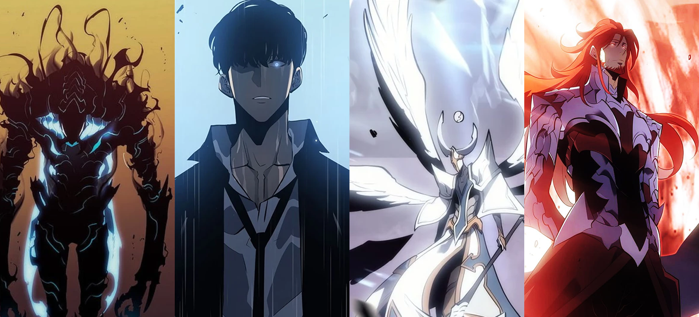

As Raças
 A história de Solo Leveling tem um total de quatro raças, que são:
Humanos
– após o surgimento dos portais, parte deles conquistaram poderes mágicos e sobre humanos. A partir daí, eles se tornaram caçadores de monstros que residem nestes portais. Além disso, eles também se tornaram elemento principal na guerra entre monarcas e governantes. Entre os humanos, existem as seguintes classes: Lutadores, Magos, Assassinos, Tanques, Rangers e Curandeiros, todos divididos entres o ranking E-S;
Monstros
– são bestas mágicas que normalmente não possuem inteligência, mas como são capazes de evoluir, podem chegar até mesmo a falar com humanos. Elas também contam com sub-divisões: Mortos-Vivos, Demônios, Bestas, Povo da Neve, Gigantes, Insetos, Humanoides e Dragões, indo também dos rankings E-S;
Monarcas
– principais antagonistas da série, foram criados pelo Ser Absoluto e tem como principal objetivo destruir a raça humana. Temos um total de nove monarcas criados e como eles não possuem corpo físico, precisam possuir o corpo de outra pessoa para descer ao mundo físico, o que custa a sua imortalidade;
Governantes
– a raça criada pelo Ser Absoluto para antagonizar com os monarcas. Atuam como defensores da raça humana e, diferente dos monarcas, não podem possuir completamente um corpo físico, podem atuar apenas como auxiliar, mas o custo disso é não poderem usar seus poderes na totalidade.